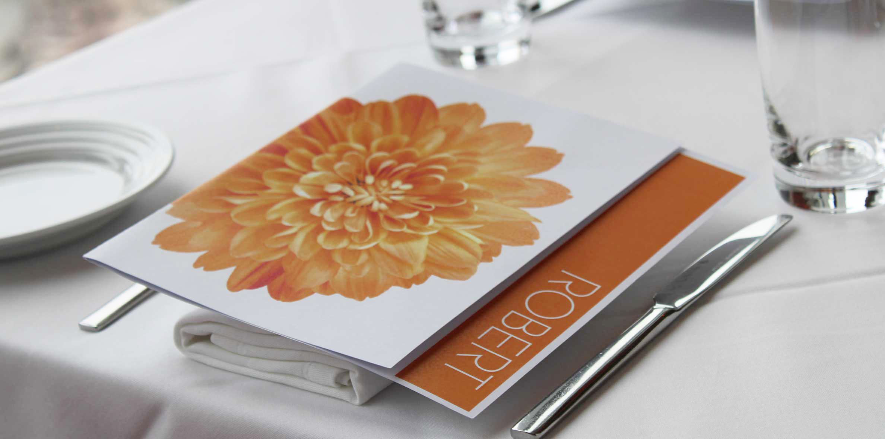
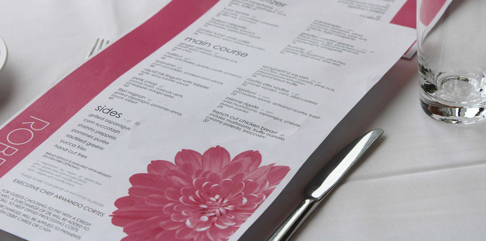
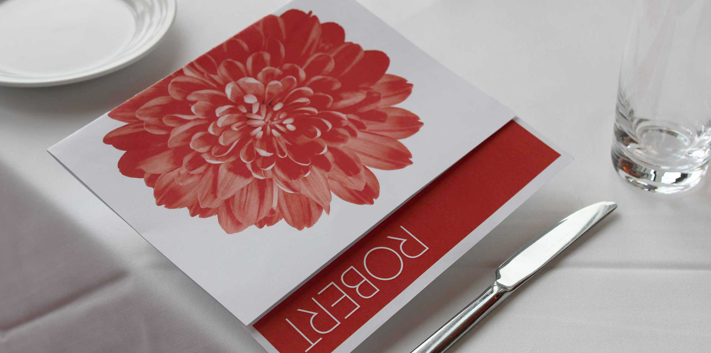
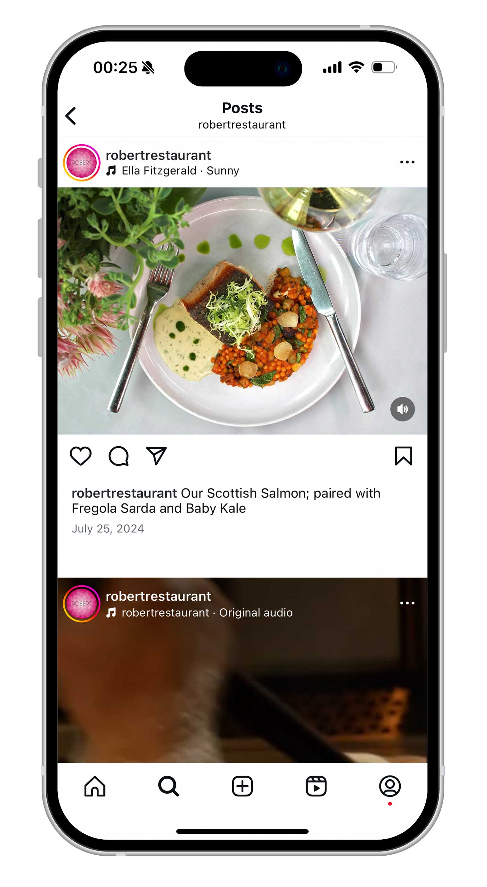
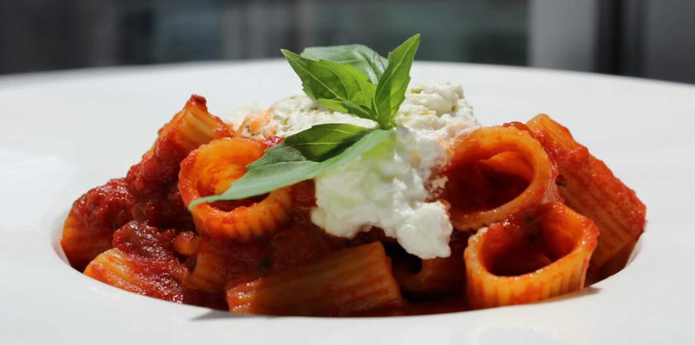
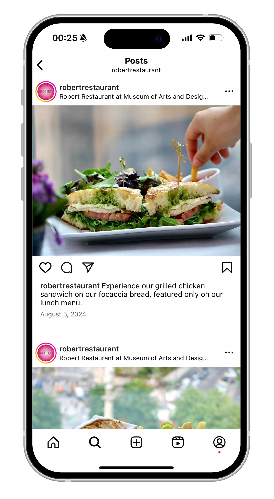
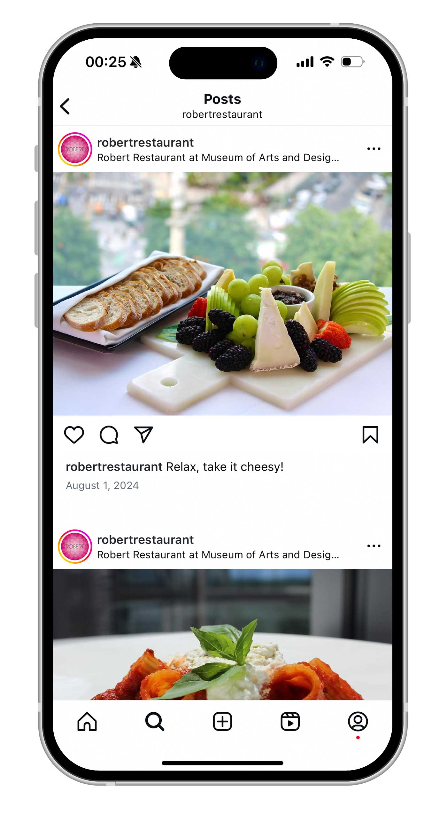

ROBERT Restaurant required a new menu. Years prior, the menu relied on an outside printer for the cover, which was used with a fastener for multiple pages. This was no longer practical for the restaurant, which created the challenge of creating a one-page printable menu to easily and quickly replace it. The existing personal identity was cleaned up, and a strong, official brand guideline for menu and printed media was created.
ROBERT was also interested in a refreshed social media presence. Working with two colleagues, the Instagram was given a new photography, videography, and technology perspective. Followers increased by 15% over 3 months, and interactions/likes grew as well. Guests regularly visited the restaurant, remarking on seeing the new social media posts, which drew them in.






